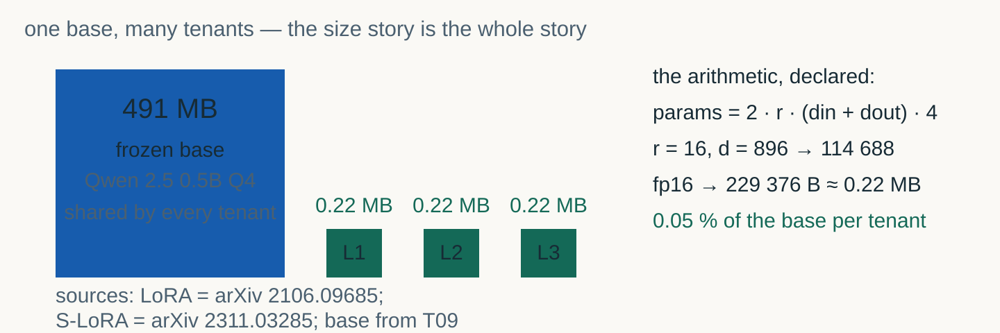
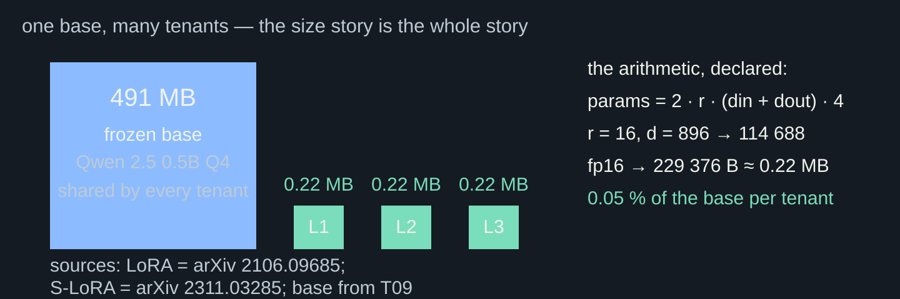
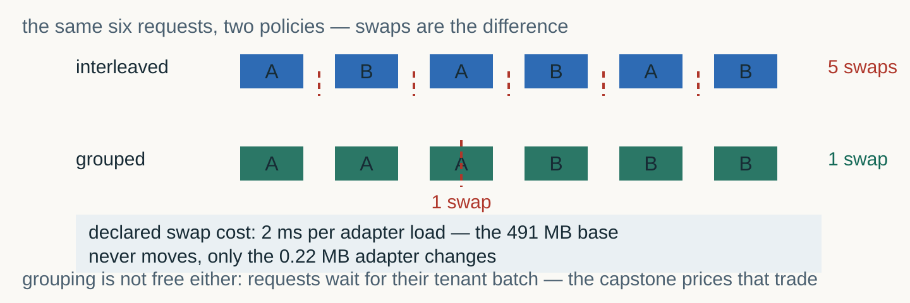
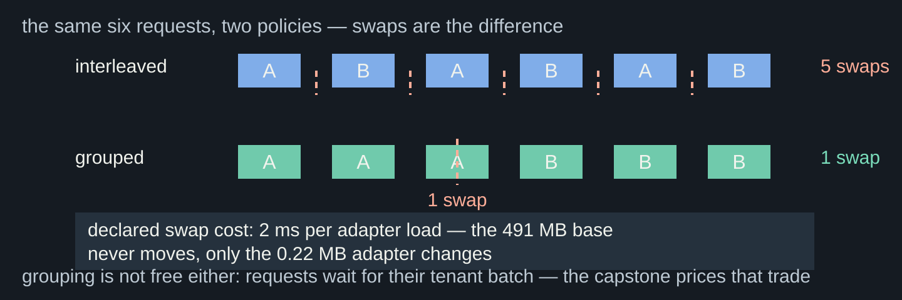
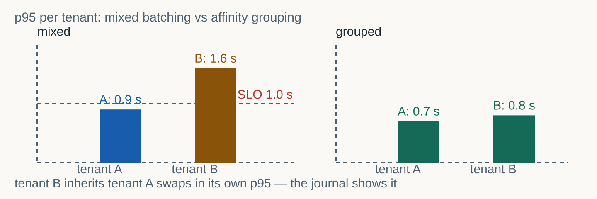
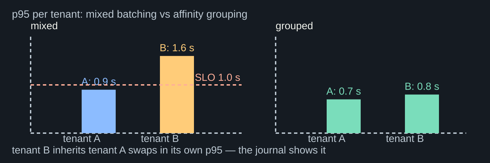

One frozen base, a 0.22 MB adapter per tenant — and the bill for every switch between them.
Одна замороженная база, 0.22 MB адаптера на арендатора — и счёт за каждое переключение между ними.
A second team wants "our own model". The naive answer — a copy per tenant — multiplies the 491 MB base by the team count: memory, load time and version drift all scale with tenants. By ten teams you are operating ten drifting engines that disagree.
Вторая команда хочет «свою модель». Наивный ответ — копия на арендатора — умножает 491 MB базы на число команд: память, время загрузки и дрейф версий растут с арендаторами. К десятой команде вы эксплуатируете десять расходящихся движков, которые спорят друг с другом.
Freeze the base; train a small low-rank adapter per tenant; serve the one base with the tenant's adapter swapped in. The multiplication collapses: tenants share 491 MB and differ by 0.22 MB. This chapter prices that 0.22 MB honestly — including the switches.
Заморозьте базу; обучите маленький low-rank адаптер на арендатора; обслуживайте одну базу с подменённым адаптером арендатора. Умножение схлопывается: арендаторы делят 491 MB и различаются на 0.22 MB. Эта глава честно оценивает эти 0.22 MB — включая переключения.
| PieceЧасть | Declared valueЗаявленное значение | Where it comes fromОткуда |
|---|---|---|
| base weights (Q4)веса базы (Q4) | 491 MB | the T09 course engine, sharedдвижок курса T09, общий |
| hidden size dразмер скрытого слоя d | 896 | model config, declaredконфиг модели, заявлено |
| rank rранг r | 16 | the quality/size dialручка качества/размера |
| target matricesцелевые матрицы | 4 (q, k, v, o) | attention projections, declaredattention-проекции, заявлено |
| adapter size (fp16)размер адаптера (fp16) | 0.22 MB | computed on the next slideвычисляется на следующем слайде |
Five rows are the whole topic's ledger: one shared base, one rank dial, four target matrices — and an adapter so small the question changes from "can we afford it" to "what do its switches cost".
Пять строк — вся ведомость темы: одна общая база, одна ручка ранга, четыре целевые матрицы — и адаптер настолько мал, что вопрос меняется: не «по карману ли», а «во что обходятся его переключения».
A trained adapter shifts the base's behaviour on the tenant's domain: a support-bot adapter scores better on support prompts, a code adapter on code. The delta is real, measured with the T13 invariant protocol — and small: rank 16 buys a focused improvement, not a new model.
Обученный адаптер сдвигает поведение базы на домене арендатора: адаптер саппорта лучше на промптах саппорта, кодовый — на коде. Дельта реальна и измеряется протоколом инвариантности T13 — и мала: rank 16 покупает сфокусированное улучшение, а не новую модель.
The frozen base is the contract everyone shares: same tokenizer, same context window, same T02 memory physics, same T06 saturation knee. An adapter cannot widen the context or add knowledge past the training cutoff — claims beyond the tenant delta are claims about the base, and they are shared.
Замороженная база — контракт, который делят все: тот же токенизатор, то же контекстное окно, та же физика памяти T02, то же колено насыщения T06. Адаптер не может расширить контекст или добавить знание после cutoff — заявления сверх дельты арендатора — это заявления о базе, и они общие.


At serving time one adapter is resident per engine slot: requests for tenant A run with A's weights in place; a request for tenant B first pays an adapter load. The declared teaching model prices that load at 2 ms per switch — the 491 MB base never moves, only the 0.22 MB sliver.
На сервинге в слоте движка резидентен один адаптер: запросы арендатора A идут с весами A; запрос арендатора B сперва платит загрузку адаптера. Заявленная учебная модель оценивает эту загрузку в 2 ms за переключение — база 491 MB никогда не двигается, двигается срез 0.22 MB.
Switches are a per-request tax whose total depends on ORDER, not just load. The same six requests cost five swaps interleaved (A, B, A, B, A, B) and one swap grouped (A, A, A, B, B, B). Grouping makes requests wait — so the routing question is a latency trade, and the lab's capstone prices it.
Переключения — потактовый налог, чья сумма зависит от ПОРЯДКА, а не только от объёма. Те же шесть запросов стоят пять переключений вперемешку (A, B, A, B, A, B) и одно при группировке (A, A, A, B, B, B). Группировка заставляет запросы ждать — вопрос маршрутизации становится латентным разменом, и капстоун лабы его оценивает.
| PolicyПолитика | What it doesЧто делает | Swaps (6 requests, 2 tenants)Переключения (6 запросов, 2 арендатора) | Pays withЧем платит |
|---|---|---|---|
| FIFO (arrival order)FIFO (порядок прихода) | serve as requests arriveобслуживает по приходу | 5 | the full switch taxполный налог переключений |
| affinity windowaffinity-окно | fill a window of W, group inside itнабирает окно из W, группирует внутри | 1–2 | batch wait inside the windowожидание партии внутри окна |
| tenant-pinned queuesочереди с привязкой к арендатору | one queue per tenant, drain at willочередь на арендатора, дренируй как хочешь | 1 | head-of-line waiting for small tenantsожидание в очереди для малых арендаторов |
The exchange rate is fixed: one swap = 2 ms of engine time. The policies trade it against waiting — and the wait is measured per tenant, which is the next slide's discipline.
Курс обмена фиксирован: одно переключение = 2 ms времени движка. Политики торгуют его на ожидание — а ожидание измеряется по арендаторам, и это дисциплина следующего слайда.




Every policy pays twice: switching (2 ms per tenant change) and waiting (a request held for its tenant batch). FIFO pays all switching and no waiting; tenant-pinned queues pay almost no switching and real waiting. The honest policy prices BOTH sides per tenant — the capstone's ledger does exactly that.
Каждая политика платит дважды: переключениями (2 ms за смену арендатора) и ожиданием (запрос, удержанный для его партии). FIFO платит всем переключениями и ни чем ожиданием; очереди с привязкой — почти без переключений, но с реальным ожиданием. Честная политика оценивает ОБЕ стороны по арендаторам — ведомость капстоуна делает ровно это.
The affinity window W is the tuning knob: W = 1 is FIFO (all switching); W = ∞ is tenant-pinned (all waiting). Between them, the window bounds the wait at W arrivals AND caps the tenant groups per window — the lab's star challenge picks W so that both the wait and the swaps stay under declared lines.
Affinity-окно W — ручка настройки: W = 1 — это FIFO (всё переключениями); W = ∞ — привязка к арендаторам (всё ожиданием). Между ними окно ограничивает ожидание W приходами И ограничивает группы арендаторов на окно — звёздный челлендж лабы выбирает W так, чтобы и ожидание, и переключения держались под заявленными линиями.
"Our adapter is better on our prompts" is a measurement claim: run the tenant's frozen prompt slice under the T13 invariant protocol — fixed order, seeded decoding, cache-busting, isolation — and quote the delta against the shared base. A delta you cannot reproduce is weather, not an improvement.
«Наш адаптер лучше на наших промптах» — измерительное заявление: прогони замороженный срез промптов арендатора под протоколом инвариантности T13 — фиксированный порядок, сидированное декодирование, сброс кэша, изоляция — и назови дельту против общей базы. Дельта, которую нельзя воспроизвести, — погода, а не улучшение.
Rank is the quality/size dial: r = 32 may add two points on the tenant slice and double the adapter; r = 8 may keep most of the delta at half the bytes. The honest answer is a measurement per rank — the same prediction-freeze discipline as T06 and T10, applied to a dial instead of a degree.
Ранг — ручка качества/размера: r = 32 может добавить два балла на срезе арендатора и удвоить адаптер; r = 8 может сохранить большую часть дельты за половину байтов. Честный ответ — измерение на каждый ранг: та же дисциплина предсказания-заморозки, что в T06 и T10, применённая к ручке вместо степени.
Admission is per tenant now: a noisy tenant's burst must not consume the envelope of a quiet one. The journal records tenant on every entry, so the 429 ledger answers the fairness question — who was rejected, how often, and by which rule — with entries instead of recollections.
Допуск теперь по арендаторам: бурст шумного арендатора не должен съедать конверт тихого. Журнал записывает арендатора в каждой записи, поэтому ведомость 429 отвечает на вопрос справедливости — кого отказывали, как часто и по какому правилу — записями, а не воспоминаниями.
The T13 cost lens applies per tenant too: a tenant's $/1M is computed on its own measured slice — the big tenant's batching gain must not be quoted as the small tenant's bill. Weighted fair admission (weights = tenant weight) is one honest policy; the auditable part is the journal, not the promise.
Стоимостная линза T13 тоже по арендаторам: $/1M арендатора считается по его собственному измеренному срезу — выигрыш батчинга большого арендатора нельзя цитировать как счёт малого. Взвешенный честный допуск (веса = вес арендатора) — одна из честных политик; аудируемая часть — журнал, а не обещание.
A declared teaching model of multi-tenant serving, not your cluster: no real LoRA training happened (the adapter deltas are declared quality deltas), the 2 ms swap cost is a declared knob, and the simulators are deterministic so every student gets the same verdict. The manifests carry the fields a real router would.
Заявленная учебная модель мультитенантного сервинга, а не ваш кластер: настоящего обучения LoRA не было (дельты качества адаптеров — заявленные), цена переключения 2 ms — заявленная ручка, а симуляторы детерминированы, поэтому каждый студент получает тот же вердикт. Манифесты несут поля, которые нес бы настоящий роутер.
Course-inherited and named: the 491 MB base from the T09 engine, the tenant journal from the T13 fixture, the p95 discipline from T13, the swap cost declared with the S-LoRA/Punica sources cited as the real-systems line. Nothing is invented as a benchmark — a real deployment replaces these numbers one for one.
Унаследованы курсом и названы: база 491 MB — из движка T09, журнал арендаторов — из фикстуры T13, дисциплина p95 — из T13, цена переключения заявлена с указанием S-LoRA/Punica как линии реальных систем. Ничего не выдумано как бенчмарк — реальный деплой заменит эти числа один к одному.
Quizzes q1–q3 with "why" follow-ups (adapter size, switch count, tenant p95). Exercises: adapter_params → count_swaps → affinity_batches → tenant_p95 → capstone AdapterSim. Posttest p1–p3 plus the T13 bridge.
Квизы q1–q3 с фоллоу-апами «почему» (размер адаптера, счёт переключений, p95 арендатора). Упражнения: adapter_params → count_swaps → affinity_batches → tenant_p95 → капстоун AdapterSim. Пост-тест p1–p3 плюс мост к T13.
Outside the checkpoint count: pick the affinity window W from {1, 2, 4, 8} so that on the declared stream the per-tenant p95 stays ≤ 1.0 s AND the swaps stay ≤ 2. The page replays the declared router arithmetic and rejects invented numbers; the reference stays hidden until you pass.
Вне счёта чекпойнтов: выбери affinity-окно W из {1, 2, 4, 8} так, чтобы на заявленном потоке p95 арендаторов держался ≤ 1.0 s И переключений было ≤ 2. Страница переигрывает заявленную арифметику роутера и отвергает выдуманные числа; эталон скрыт до сдачи.
No real LoRA training (adapter deltas are declared), no paged adapter memory (S-LoRA's answer), no merged-kernel inference (Punica's answer), one resident adapter per slot, switches priced flat at 2 ms. Real systems overlap adapter compute and page adapters to make switches cheaper than our declared constant.
Никакого настоящего обучения LoRA (дельты адаптеров заявлены), никакой страничной памяти адаптеров (ответ S-LoRA), никакого merged-kernel-инференса (ответ Punica), один резидентный адаптер на слот, переключения по плоской цене 2 ms. Реальные системы перекрывают вычисления адаптеров и странично подгружают их, делая переключения дешевле нашей заявленной константы.
The economics transfer: adapters are slivers, switches are ordered costs, routing trades them against waits, and per-tenant promises are measured per tenant. A production stack changes the constants — the ledger, the drills and the capstone arithmetic stay. The journal field names its tenant; that is the auditable part.
Экономика переезжает: адаптеры — срезы, переключения — упорядоченные издержки, маршрутизация торгует их против ожиданий, а обещания арендаторов измеряются по арендаторам. Продакшен-стек меняет константы — ведомость, дриллы и арифметика капстоуна остаются. Поле журнала называет арендатора — это аудируемая часть.
p1: an adapter changes the tenant delta, never the base contract (context width, cutoff knowledge stay shared). p2: one global p95 is the mean-vs-tail mistake at tenant grain — the promise is per tenant, nearest-rank per slice. p3: grouping trades switches for waits — the window W prices both. Bridge b1 ← T13: the tenant p95 is computed from the same hash-chained journal slice T13 verified.
p1: адаптер меняет дельту арендатора, никогда контракт базы (ширина контекста и знания cutoff общие). p2: один глобальный p95 — ошибка «средняя против хвоста» на зерне арендатора — обещание по арендаторам, nearest-rank по срезам. p3: группировка торгует переключения за ожидания — окно W оценивает обе стороны. Мост b1 ← T13: p95 арендатора считается из того же хэш-цепочечного среза журнала, который верифицировала T13.
A routing memo: the ledger rows, the policy you chose (FIFO / window / pinned) with ITS two-sided price on your own stream, the per-tenant p95 table with windows named, and the fairness line — who was rejected by which rule. One page, checked against AdapterSim.
Меморандум маршрутизации: строки ведомости, выбранная политика (FIFO / окно / привязка) с ЕЁ двусторонней ценой на своём потоке, таблица p95 арендаторов с названными окнами и строка справедливости — кого отказывали по какому правилу. Одна страница, сверенная с AdapterSim.
Price the sliver. Count the swaps. Measure per tenant.
Name the policy. Journal everything.
Оцени срез. Сосчитай переключения. Измеряй по арендаторам.
Назови политику. Журналируй всё.